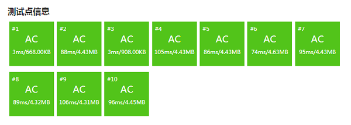

3.2.5. 差分法（洛谷P3397）¶
差分法是一种极其常用的算法技巧，是普及组和提高组试题中的常考知识点。一维的线性差分题常常出现在普及组和提高组Day1的试题中，二维差分和树上差分则是提高组Day2的常见题型。
3.2.5.1. 线性差分¶
线性差分用于简化处理数列上的一系列区间修改，它是基于前缀和来实现的。在学会了线性差分后将其扩展到二维情形是不难的。另外还有一种针对树结构的树上差分，我们将在后面学过树结构后再介绍。本节就先介绍最基本的一维线性差分，简称差分。
数学
差分本身是一个数学概念，它应用在离散函数，也就是通常所说的数列上，用来表示每一对前后项之间的差。最常用的叫做前向差分，也就是通常所说的差分。数列 \(\{a_n\}\) 中第 \(i\) 项上的差分等于它的后一项减去它自己的差，记作 \(\Delta a_i=a_{i+1}-a_i\)，可以理解为从当前项前进到后一项时数值的改变量。对于数列的尾项，由于它没有后项了，所以尾项没有差分。
这样的话，一个项数为n的数列，它的差分数列项数为n-1。例如数列 [2,5,3,4]，它的差分数列就是 [3,-2,1]。
可以看到，差分数列反映了原数列中数值的变化波动过程，但是由于前向差分数列并不知道原数列的首项是什么，所以不能从它倒推出原数列，只能得出波动情况。在实际应用中，有时候为了让差分数列能完整再现原数列，会在原数列首项之前虚拟一个等于零的项 \(a_0=0\)，这样差分数列就会从 \(\Delta a_0=a_1-a_0=a_1\) 开始。这样数列和它的差分就有了一致的项数，而差分的首项就是数列的首项，从差分可以逐步还原整个原数列。
例如上面举的那个例子，加上虚拟的 \(a_0=0\) 之后它的差分就变成了 [2,3,-2,1]。
数列的区间修改处理是指对指定子区间里的所有元素进行相同的增减修改。例如数列 [1,2,3,4]，对其从首项到第3项的子区间做加1处理之后，变成 [2,3,4,4]。然后再对从第2项到第3项的子区间做加2处理，变成 [2,5,6,4]。最后再对第2项到第4项的子区间做减1处理，数列最终变成 [2,4,5,3]。这就是所谓的多次区间修改。
用最普通的模拟法也可以完成上述操作，只要每次都按照修改要求对指定区间中的元素循环完成规定的加减就可以了。但是如果数列很大，每次修改的区间长度都很长，而且整套操作下来修改的次数又非常之多的话，简单模拟效率就很低。假设修改次数为 \(m\)，修改区间的平均长度为 \(n\)，那么简单模拟的时间复杂度为 \(O(mn)\)，这样的时间效率，数据量稍大就要等着TLE了。因此我们需要利用差分来优化整个操作过程，差分在这里可以理解为反向运用前缀和的技巧，通过计算前缀和来构造出数据，它可以把时间复杂度降低到 \(O(m+n)\)。
差分，其实是把区间操作改成点上的操作。要实现这种改变，第一步要做的事情是：在每次修改时导致数据发生改变的起点（修改区间的左端点）和数据不再改变的起点（修改区间右端点之后的第一个位置，如果右端点是整个数列的终点，那么就忽略这个点）这两个特殊点上记录数据的改变情况，最终形成一张“修改指令表”。
这张重要的“修改指令表”有一个听上去很酷的名字，叫做差分表，在编程时通常用一个数组来表示，就叫差分数组。差分数组的长度应该至少为原数列的项数，初始值必须为全0。让我们用上面所举的那个例子来看看怎样一步步地生成差分数组，假设原数列保存在数组 int data[4] = { 1, 2, 3, 4 } 中，差分数组定义并初始化为 int diff[4] = { 0 } （请注意我们这次没有把数组的0号元素空出来，而是从0号元素开始存放实际数据了）。下面演示怎样处理三次区间修改：
第1次修改：对从第1个到第3个数的子区间做加1操作
区间左端点 L = 0，右端点 R = 2，加数 P = 1
本次修改数据发生改变的起点为 L = 0，因此在差分数组相应位置上执行此修改 diff[0] += 1
本次修改数据不再改变的起点为 R+1 = 3，因此在差分数组相应位置上执行此修改的反操作 diff[3] -= 1
第1次修改处理完成，差分数组变成 { 1, 0, 0, -1 }
第2次修改：对从第2个到第3个数的子区间做加2操作
区间左端点 L = 1，右端点 R = 2，加数 P = 2
本次修改数据发生改变的起点为 L = 1，因此在差分数组相应位置上执行此修改 diff[1] += 2
本次修改数据不再改变的起点为 R+1 = 3，因此在差分数组相应位置上执行此修改的反操作 diff[3] -= 2
第1次修改处理完成，差分数组变成 { 1, 2, 0, -3 }
第1次修改：对从第2个到第4个数的子区间做加1操作
区间左端点 L = 1，右端点 R = 3，加数 P = -1
本次修改数据发生改变的起点为 L = 1，因此在差分数组相应位置上执行此修改 diff[1] += -1 (即减1)
本次修改数据不再改变的起点为 R+1 = 4，超出范围，忽略
第1次修改处理完成，差分数组变成 { 1, 1, 0, -3 }
处理完所有区间修改之后，我们得到了差分表 {1, 1, 0, -3}。乍看上去好像很难理解这样一张差分表有什么用处。确实，它还不能马上应用，后面还有一步重要的操作要做，那就是对它做前缀和处理。这个例子的数据很简单，我们手工计算一下就可以很简单地得到它的前缀和 {1, 2, 2, -1}。
提示
到这里为止，请大家暂停一下先不要继续往下阅读。先对照例子中的原数列和最终结果数列，再对照一下我们得到的差分前缀和，想一想它的每一项代表了什么意思？然后对照差分的数学意义想一想差分表里的每一项又代表什么意思？再想一想为什么能得到这张神奇的差分表？如果能想明白这三个问题，那么线性差分的原理就彻底搞懂了，以后也不会再忘了这个算法技巧了。
是的，现在差分表里每个位置上的数，就表示原数列相应位置的数的最终改变量。现在只需要简单得把差分数组里的每一个数 diff[i] 一一加到原数组相应位置 data[i] 上去就完成了整个多次区间修改操作。在这个例子里最后一步的操作是这样的：
data: { 1, 2, 3, 4 }
+) diff: { 1, 2, 2, -1 }
-------------------------
data: { 2, 4, 5, 3 }
这正是我们所要的正确结果。
如果原数列一共有 \(n\) 个数，区间修改一共进行了 \(m\) 次，那么处理每一次修改要用2次加法，总共 \(2m\) 次，差分数组求前缀和要用 \(n\) 次加法，最后差分加到数据上去也是 \(n\) 次加法。总共执行 \(2m+2n\) 次加法，时间复杂度 \(O(m+n)\)。
下面是这个一维线性差分的示例程序，请运行测试一下并看懂整个程序。注意这个程序里数据从数组0号元素开始存放，注意原地做前缀和处理的代码。
#include <cstdio>
int main()
{
int n, data[1000], diff[1000] = { 0 };
int m, l, r, p;
scanf("%d", &n); // n: 输入数据总量
for (int i = 0; i < n; i++)
scanf("%d", &data[i]);
scanf("%d", &m); // m: 区间修改的次数
// 循环读入每次修改的左右端点和改变量，记录改变点
for (int k = 0; k < m; k++) {
scanf("%d %d %d", &l, &r, &p);
diff[l] += p;
if (r < n - 1) diff[r+1] -=p;
}
// 原地完成diff差分数组的前缀和处理
for (int i = 1; i < n; i++)
diff[i] += diff[i-1];
// 用差分数组对位完成数据修改
for (int i = 0; i < n; i++)
data[i] += diff[i];
// 输出结果
for (int i = 0; i < n; i++)
printf("%4d", data[i]);
printf("\n");
return 0;
}
小技巧
实际编程进行差分时，往往会在把数组的长度开大一些，在实际的尾项之后再虚拟一个等于0的项。这样，在遇到差分区间的右端点R为实际的尾项时，程序可以不必要进行额外的判断，而是像通常那样在R+1项上设置差分结束标志，程序代码因此会简洁很多。
类比一下可以发现，这个小技巧其实与处理前缀和时用的那个小技巧是异曲同工的，即在实际的首项前面留出一个虚拟的等于0的0号项，从而使得程序中不必担心数组下标越界。
当然了，要不要使用这样的技巧对程序的结果是不会有影响的，你完全可以选择不用，但是我们的建议是：用！有时候为了方便，甚至可以前后都增设一个虚拟的项！
思考
学会一维线性差分了，你能不能把它拓展到矩阵的多次子区域修改呢？也就是说拓展为二维差分算法。在继续到下一节之前请务必先思考并尝试一下。
3.2.5.2. 二维差分（洛谷P3397）¶
学会了一维线性差分后，要把这种技巧推广到二维区域的差分上就很方便了。我们只需要把m×n的二维区域视为由m个长度为n的一维区域由上至下铺设而成的就可以了。在它的一个左上角为 \((r_1,c_1)\)，右下角为 \((r_2,c_2)\) 的长方形子区域内做整体增减处理，增减量为 \(d\)。这只不过是在从第 \(r_1\) 行到第 \(r_2\) 行这几个一维数列上做相同的一维线性差分而已，差分区间为 \([c_1,c_2]\)，差值为 \(d\)。
例如我们有一块5×5的区域要做连续数次二维差分，它的差分表初始状态当然还是为全零：
0 0 0 0 0
0 0 0 0 0
0 0 0 0 0
0 0 0 0 0
0 0 0 0 0
现在要对第2行第3列到第4行第4列的区域做加2操作，那么我们就对第2行到第4行的三行分别都做一次一维线性差分，得到如下的差分表：
0 0 0 0 0
0 0 2 0 -2
0 0 2 0 -2
0 0 2 0 -2
0 0 0 0 0
再来一次从第1行第1列到第2行第4列的减1差分：
-1 0 0 0 1
-1 0 2 0 -1
0 0 2 0 -2
0 0 2 0 -2
0 0 0 0 0
最后来一次从第4行第2列到第5行第5列的加3差分，这次由于差分的最后一列是末尾列，所以它的结尾处理就被忽略掉了：
-1 0 0 0 1
-1 0 2 0 -1
0 0 2 0 -2
0 3 2 0 -2
0 3 0 0 0
为了得出在整个区域上做过二维差分之后的结果，我们对差分表的每一行做一次一维前缀和即可。比如上面这个经历了三次差分后的5×5区域，它最终的结果是：
-1 -1 -1 -1 0
-1 -1 1 1 0
0 0 2 2 0
0 3 5 5 3
0 3 3 3 3
非常简单，对不对？接下来我们看一个二维差分最典型的问题，地毯覆盖问题，大约是NOIP提高组Day2第一题的难度要求。
地毯（洛谷P3397）
题目描述
在 n * n 的格子上有 m 个地毯。
给出这些地毯的信息，问每个点被多少个地毯覆盖。
输入格式
第一行，两个正整数 n、m。意义如题所述。
接下来 m 行，每行两个坐标 (x1,y1) 和 (x2,y2)，代表一块地毯，左上角是 (x1,y1)，右下角是 (x2,y2)。
输出格式
输出 n 行，每行 n 个正整数。
第 i 行第 j 列的正整数表示 (i,j) 这个格子被多少个地毯覆盖。
输入输出样例
输入：
5 3
2 2 3 3
3 3 5 5
1 2 1 4
输出：
0 1 1 1 0
0 1 1 0 0
0 1 2 1 1
0 0 1 1 1
0 0 1 1 1
说明/提示
【样例解释】
0 0 0 0 0 0 0 0 0 0 0 1 1 1 0
0 1 1 0 0 0 1 1 0 0 0 1 1 0 0
0 1 1 0 0 -> 0 1 2 1 1 -> 0 1 2 1 1
0 0 0 0 0 0 0 1 1 1 0 0 1 1 1
0 0 0 0 0 0 0 1 1 1 0 0 1 1 1
【数据范围】
对于 20% 的数据，有 n<=50，m<=100。
对于 100% 的数据，有 n<=1000，m<=1000。
题意分析
说实话这题基本上属于模板题，实在没有什么可分析的，就是一个单纯的二维差分，每次的差都是加一。唯一需要注意的是请在看题时千万看清楚，输入的坐标 (x1,y1) 和 (x2,y2)，是行号在前还是列号在前。在样例解释的第三步是可以看得出来的。
下面是AC代码。因为最大可能的数据量为1000行1000列，有可能超过局部变量的内存限制，为了方便起见所以采用了全局变量。另外，为了方便，数组的行列都多开了一些，从 field[1][1] 开始存放差分表。并且差分表的上下前后都留出了虚拟的全0行列，使得我们无论在做差分还是在做前缀和的时候都能够肆无忌惮，不需要额外的数组下标越界判断。
#include <cstdio>
int field[1010][1010] = { 0 };
int main()
{
int n, m;
scanf("%d %d", &n, &m);
int x1, y1, x2, y2;
for (int i = 0; i < m; i++) {
scanf("%d %d %d %d", &x1, &y1, &x2, &y2);
y2++;
for (int row = x1; row <= x2; row ++) {
field[row][y1]++;
field[row][y2]--;
}
}
for (int row = 1; row <= n; row++)
for (int col = 1; col <= n; col++)
field[row][col] += field[row][col-1];
for (int row = 1; row <= n; row++)
for (int col = 1; col <= n; col++)
printf("%d%c", field[row][col], col == n ? '\n' : ' ');
return 0;
}
最后看一下AC结果，可以看出来几个数据量大的测试点上，运行所花的时间还是比较长的，有超过100ms的测试点。可见如果不用差分法的技巧，解这类问题将会有多么可怕。
练习
求多个整数取值范围中出现次数最多的整数。
给定多个整数取值范围 \([L_i, R_i]\)，找出在所有这些范围内出现次数最多的那个整数，如果这样的整数有多个的话就指其中最小的那个。例如：
输入: L1 = 1, R1 = 4;
L2 = 3, R2 = 5;
L3 = 4, R3 = 8;
输出: 4
解释: 在给出的三个取值范围中，4一共出现了3次，每个范围里都有4，而其他整数都不到3次，所以答案是4。
输入: L1 = 1, R1 = 6;
L2 = 3, R2 = 5;
L3 = 2, R3 = 8;
输出: 3
解释: 在给出的三个取值范围中，3,4,5都一共出现了3次，同是出现次数最多的，按照题目要求取最小的那个，所以答案是3。